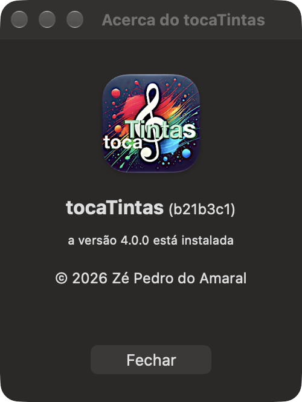

Acerca e versão

Entre parênteses, a seguir ao nome, está o commit do Git a partir do qual a aplicação foi compilada. É gravado no Info.plist por uma fase de script que corre a cada compilação. Um + no fim, como em (b21b3c1+), quer dizer que havia alterações por registar no Git: a aplicação não corresponde exactamente a nenhum estado registado do código.
Ajuda ▸ Ajuda do tocaTintas (⌘?)
Abre este manual no visualizador de Ajuda do macOS, dividido em temas. O campo de pesquisa do menu Ajuda procura nos temas e nas palavras-chave do manual, e mostra-os por baixo dos itens de menu que encontra. O livro de ajuda que vai dentro da aplicação, tocaTintas.help, é gerado a partir desta página pelo gerar-ajuda.py, e é o desta página no momento em que foi gerado.